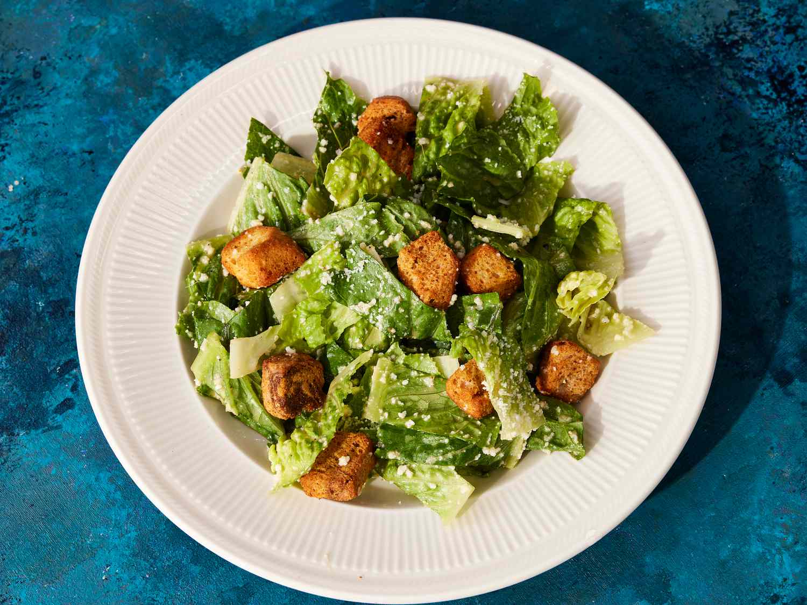

Caesar Dressing

Rich with egg and parmesan, with savory depth from anchovy and garlic, this Caesar dressing is delicious on any salad (not just its namesake).
Ingredients
- 1 large egg yolk
- 1 tablespoon lemon juice
- 4 oil-packed anchovy filets, or more to taste
- 2 teaspoons Worcestershire sauce
- 4 cloves garlic, minced
- 3/4 ounce Parmesan cheese, finely grated (23g)
- 1/3 cup canola oil (or other neutral oil)
- 1/4 cup extra-virgin olive oil
- Salt and freshly ground black pepper, to taste
Directions
- Combine egg yolk, lemon juice, anchovies, Worcestershire sauce, garlic, and Parmesan cheese in the bottom of a cup that just fits the head of an immersion blender, or in the bottom of the mini chopper attachment of a food processor. With blender or processor running, slowly drizzle in canola oil until a smooth emulsion forms. Transfer mixture to a medium bowl.
- Whisking constantly, slowly drizzle in 1/4 cup extra-virgin olive oil. Season to taste generously with salt and pepper. Caesar dressing can be stored in a sealed container in the refrigerator for up to 5 days.
Notes
The number of anchovies and amount of Worcestershire sauce used can be varied according to taste and the size of the anchovies. For best results, use high-quality oil-packed anchovy filets.